P4
Physics-based Character Animation
[ControlVAE – Yao et al. 2022]
✅ 物理方法的难点：
✅ (1) 仿真：在计算机中模拟出真实世界的运行方式。
✅ (2) 控制：生成角色的动作，来做出响应。
P5
Outline
- Simulation Basis
- Numerical Integration: Euler methods
- Equations of Rigid Bodies
- Rigid Body Kinematics
- Newton-Euler equations
- Articulated Rigid Bodies
- Joints and constraints
- Contact Models
- Penalty-based contact
- Constraint-based contact
https://www.cs.cmu.edu/~baraff/sigcourse/
✅ 角色物体动画通常不关心仿真怎么实现。
✅ 但也可以把仿真当成白盒，用模型的方法来实现。
✅ 粒子运动模拟的部分跳过。P6-P22
✅ 弹簧模拟跳过。P23-P27
✅ 刚体模拟跳过。P28-P56
P57
Kinematics vs. Dynamics
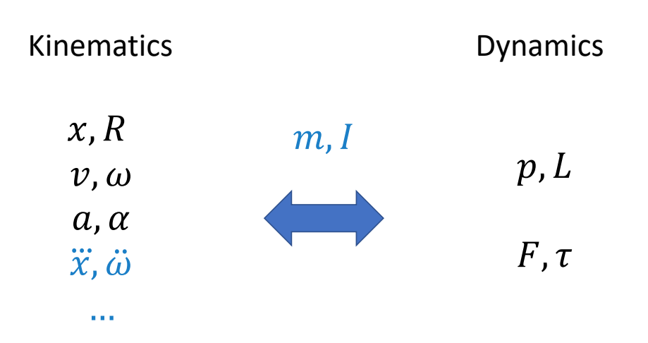
✅ 运动学与动力学，主要区别在于有没有考虑角色质量。因为质量代表惯性，有惯性就不能瞬移。
✅ 动力学基本概念跳过。P58-P89
P91
Articulated Rigid Bodies
A System with Two Links
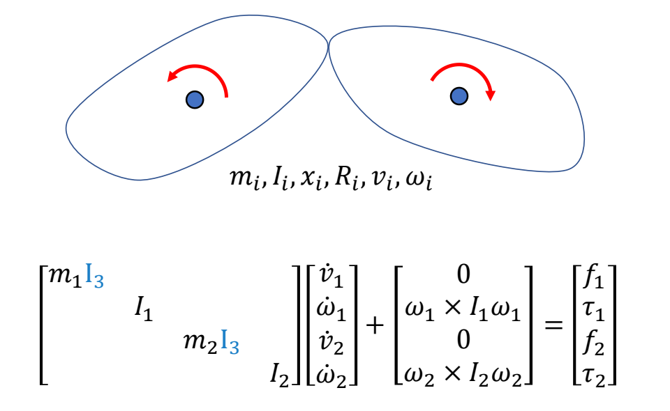
✅ 两个刚体的场景，如果两个刚体独立，可以以矩阵的方式扩展。
✅ 物体在力的作用下的物理状态的更新公式．见 GAMES 103．
✅ 每一行是独立的，联立起来为方程组。
以上公式会简化为：
$$ M\dot{v} +C(x,v)=f $$
✅ 第二项是关于x和v的函数，x体现在\(\omega\)，v体现在I。
P93
✅ 结果是两个物体会分开。
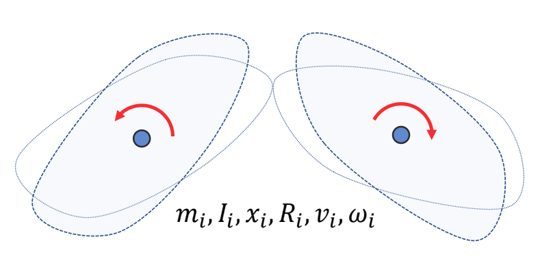
P95
A System with Two Links and a Joint
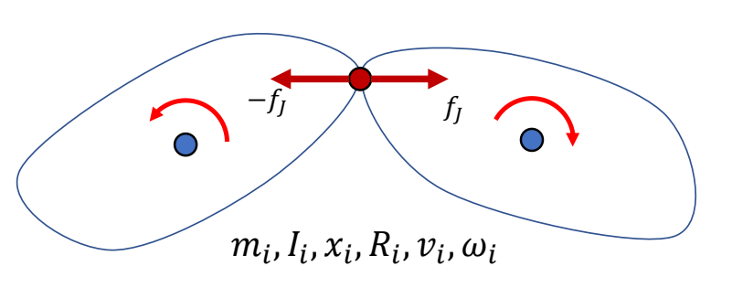
$$ M\dot{v} +C(x,v)=f+f_J $$
✅ 两个物体中间有一个关节，约束两个物体不能分开。
✅ 通过旋转力\(f_J\)的方法来保证约束，但 \(f_J\) 是未知的。
P97
Constraints简化问题分析
问题描述
✅ 假设有一约束：小球必须按轨道行进。
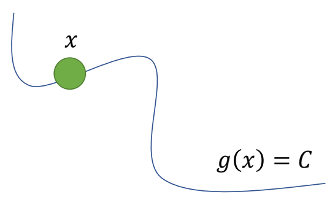
小球速度分析
✅ 根据已知条件，可以进行以下分析：由于每一时刻都满足，对时间求导，导数为零。
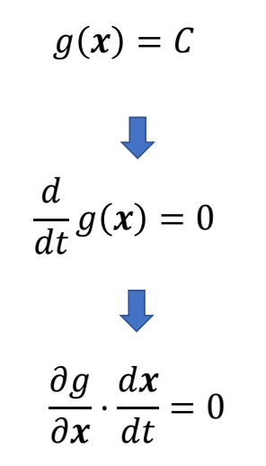
因此得到约束为：如果要求小球按照轨道运行，其速度必须满足以下公式。
P98
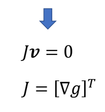
小球的约束力分析
P99
✅ 为了让小球满足约束，需给小球一个约束力。
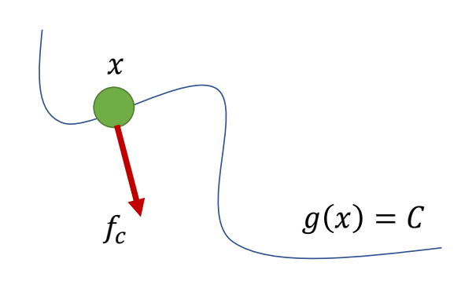
\(^\ast \) Constraint is passive No energy gain or loss!!!
$$ f_c\cdot v=0 $$
✅ 约束力不应产生能量，即力与运动方向垂直。
P100
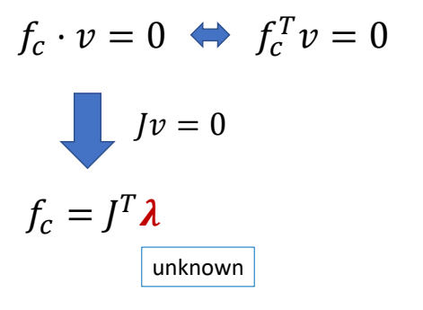
✅ 结合是一页的结论可知：\(f_c\) 与 \(J\) 同方向，但大小未知。
✅ \(f_c\) 大小以当前状态和外力情况计算而得。
P101
小球的整体受力分析
✅ 对小球做受力分析，受到外力 \(f\) 和约束力 \(f_c\)．
✅ 假设 \(M，x，v．f\) 已知，求 \(f_c\) ，使得小球沿轨迹移动。
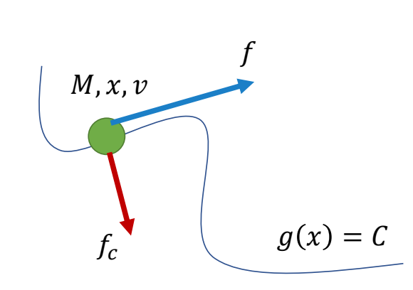
$$ \begin{align*} M\dot{v} & =f+J^T\lambda \\ Jv&=0 \end{align*} $$
✅ 公式 1：\(f＝am\)．公式 2：前面推导得出。把两个公式离散化。
✅ 因为公式 2 只约束了速度没有约束位置。离散化后对原公式只是近似，会有误差，导到小球远离曲线。
$$ \begin{align*} M\frac{v_{n+1}-v_n}{h} & =f+J^T\lambda \\ Jv_{n+1}&=0 \end{align*} $$
✅ 得出未知数为\(\lambda\)和\(v_{n+1}\)的联立方程组，求解方程组。
✅ 解方程组不难，但存在小球偏离轨道的问题。
P103
✅ 当物体偏离轨道，要有拉回来的速度。因此公式2改为：
$$ Jv_{n+1}=\alpha \frac{C-g(x_n)}{h} $$
Correction of numerical errors
𝛼: error reduction parameter (ERP)
P104
方程组求解
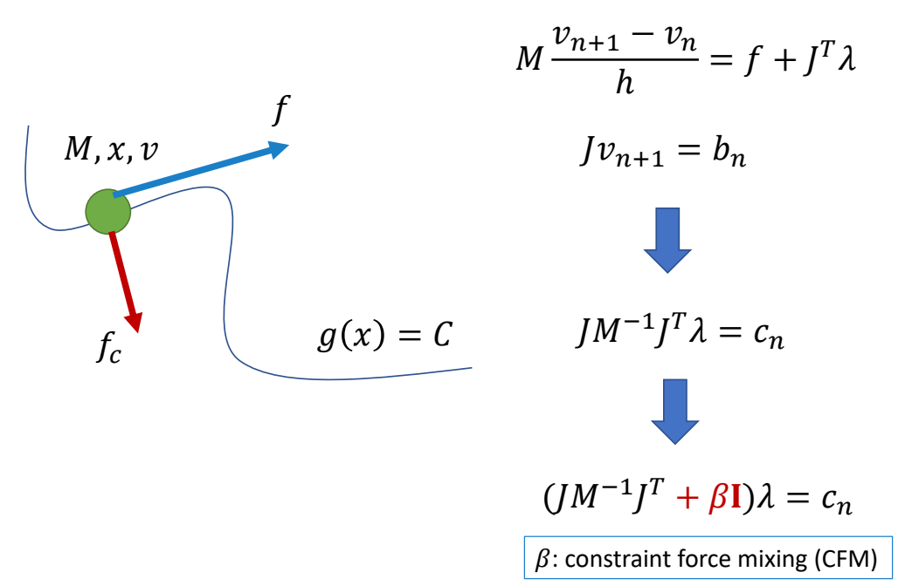
✅ 把ERP简写为 \(b\).
✅ 为了防止矩阵不可逆，增加 \(\beta I\).（常见技巧）
✅ 解 \(\lambda\) 需要先求逆。
P105
Joint Constraint
约束方程
✅ 前面是约束应用的简单例子，真正的问题是如何把约束应用到两个物体的连接约束上。
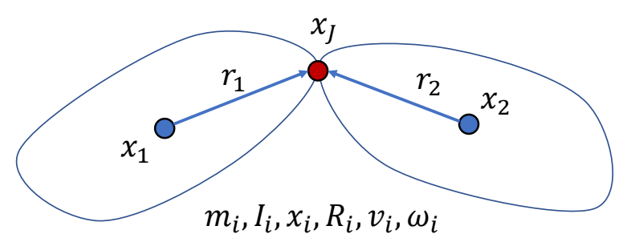
✅ 因此设计约束：从 \(x_1\) 求 \(x_J\)位置 和从 \(x_2\) 求 \(x_J\)位置所得结果应该相同。
$$ x_1+R_1r_1=x_J=x_2+R_2r_2 $$
对\(dt\)求导：
$$ v_1+\omega _1\times r_1=v_2+\omega _2\times r_2 $$
P106
✅ 整理得矩阵形式，得：
$$ \begin{bmatrix} I_3 & -[r_1] _ \times & -I_3 & [r_2] _ \times \end{bmatrix}\begin{bmatrix} v_1 \\ w_1 \\ v_2 \\ w_2 \end{bmatrix}=0 $$
✅ 矩阵乘法第一项为 \(J\)，第二项为 \(v\). 进一步简化为：
$$ Jv=0 $$
P107
运动方程+约束方程
$$ \begin{align*} M\dot{v} +C(x,v)& =f+J^T\lambda \\ Jv&=0 \end{align*} $$
✅ 公式 1：运动方程。公式 2：约束方程。
✅ 运动方程与约束方程联立。
P109
Different Types of Joints
✅ 前面描述的是 Ball Joint的约束。
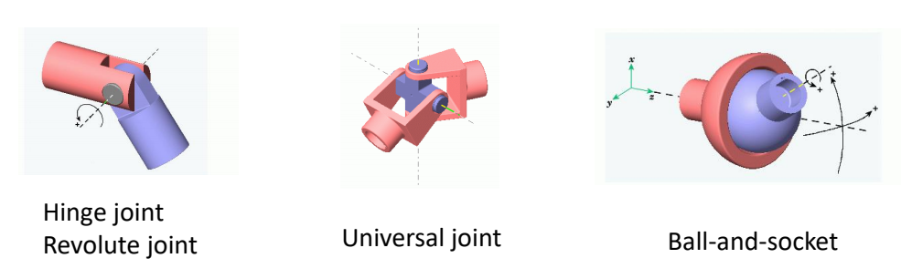
✅ Hinge 约束：除了位置还有角速度约束，在某个轴上的角速度应当一致。Universal 类似。
P110
A System with Many Links Joints
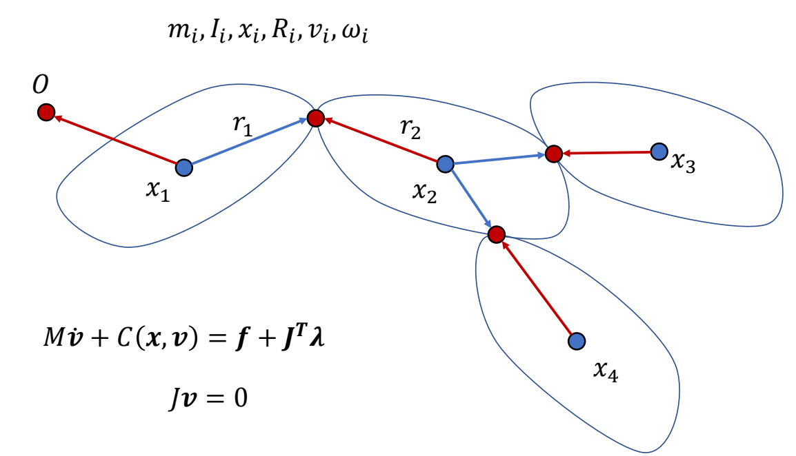
✅ 分段多刚体在公式上没有本质区别，只是矩阵更大一点。
P111
Contacts
✅ 如何处理与地面的接触，让人站在地面上。
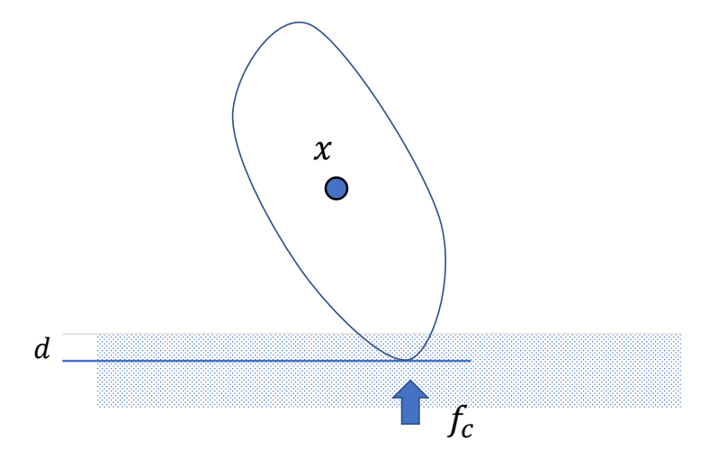
✅ 要解决的问题：(1) 地面接触检测 (2) 如何对碰撞点施加力，使物体出来。
P114
Penalty-based Contact Model
Baseline
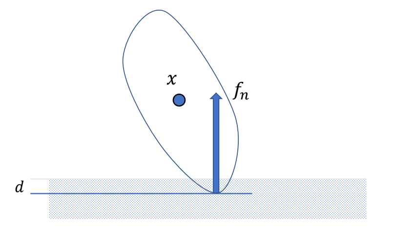
$$ f_n=-k_pd-k_dv_{c,\perp } $$
✅ 类似弹簧形式，陷入越深，力越大。
✅ 第二项：为了防止落地弹飞，增加阻尼项。
✅ 效果：会有一些陷入，但不会陷入太多
P115
考虑摩擦力
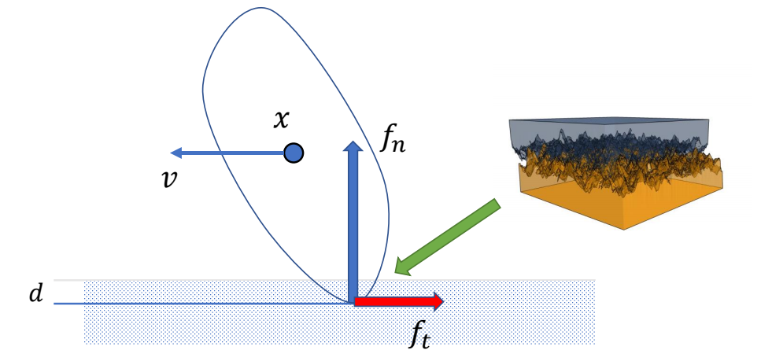
✅ 受力分析：支持力，动摩擦力。
✅ 动摩擦力，大小＝支持力 x 摩擦系数，方向与运动方向相反
$$ \begin{align*} f_t&=-\mu f_n\frac{v_{c,\parallel }}{||v_{c,\parallel }||} \end{align*} $$
✅ 一般不模拟静摩擦力
P116
存在的问题
✅ 存在的问题：\(K_p\) 必须很大，否则脚陷地明显，步长必须非常小，否则不稳定。
P118
Contact as a Constraint
✅ 另一种方法，把接触建模为约束。
接触点状态分析
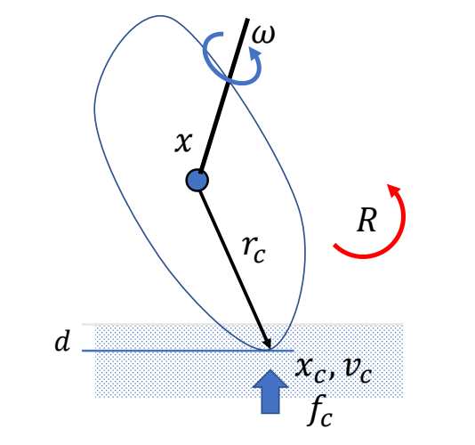
$$ x_c =x+r_c \quad\quad\quad\quad\quad\quad $$
$$ v_c =v+\omega \times r_c=J_c \begin{bmatrix} v\\ w \end{bmatrix} $$
$$ v_{c,\perp } =v+\omega \times r_c=J_{c,\perp }\begin{bmatrix} v \\ \omega \end{bmatrix} $$
P120
接触点约束分析
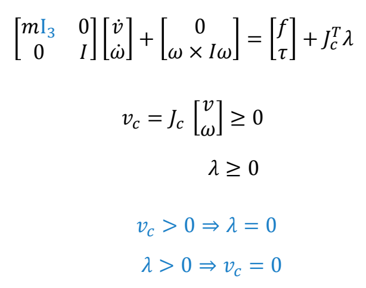
$$ v_c\perp \lambda =0 $$
✅ 约束 1：点在竖直方向的速度必须大于 0，即只能向上移动。
✅ 约束 2：力的大小也大于 0．只能推，不能拉。
✅ 约束 3：力和速度只能有一个不为零，否则会做功。合在一起称为线性互补方程，是通常碰撞建模方式。
✅ 这个方程比较难解，例如 ODE
这类问题被称为：(Mixed) Linear Complementary Problem (LCP)
解LCP的方法有：
e.g. Lemke's algorithm – a simplex algorithm
P122
考虑摩擦力的约束问题
How to deal the friction?
🔎 Fast contact force computation for nonpenetrating rigid bodies.
David Baraff. SIGGRAPH ’94
✅ 快速实现静摩擦约束的建模。
P123
Simulation of a Rigid Body System
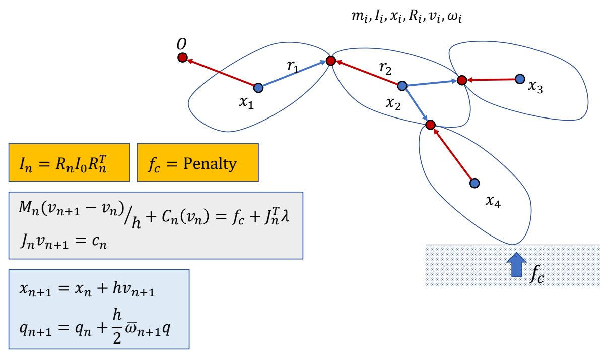
✅ 把人简化为分段刚体。整体过程为：
✅ (1) 黄：计算当前状态。
✅ (2) 绿：计算约束，求解，解出下一时刻的速度。
✅ (3) 蓝：更新下一时刻的量（积分）。
✅ 缺少部分：主动力 \(f\) 推动角色产生运动。